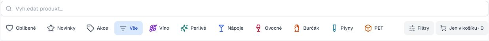
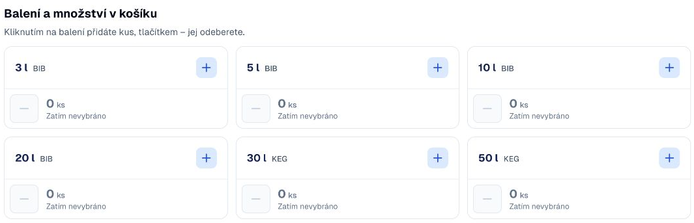
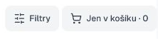
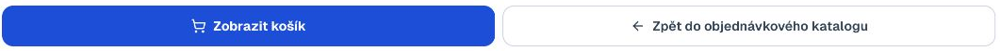
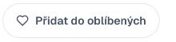

Vaše první objednávka.
Jednoduše, krok za krokem.
Dobrý den, vítejte na Beginy.cz.
Vyberte balení, upravte množství a odešlete objednávku. Ukážeme vám, kde kliknout.
Najděte svůj produkt
Napište název do vyhledávání nebo vyberte kategorii. Přes Filtry zúžíte nabídku podle barvy, sladkosti a dostupnosti.

Výřez skutečné aplikace · kliknutím zvětšíte
Zvolte balení a počet kusů
Kliknutím na objem přidáte balení. Dalším kliknutím přidáte další kus, minusem množství snížíte. Detail otevřete kliknutím na název produktu.

Počet vybraných balení uvidíte přímo pod objemem. Při nule je minus neaktivní.
Výřez skutečné aplikace · kliknutím zvětšíte
Zobrazte pouze svůj výběr
Tlačítko Jen v košíku ukáže vybrané produkty přímo v katalogu. Množství zde můžete upravit. Dalším kliknutím obnovíte předchozí výběr.

Výřez skutečné aplikace · kliknutím zvětšíte
Zkontrolujte souhrn
Otevřete Zobrazit košík. Zkontrolujte balení a množství, přidejte případnou poznámku a pokračujte ke kontrole údajů.

Souhrn objednávky
5 l BIB2 ks
Tlačítka: skutečný výřez. Souhrn: modelová ukázka.
Potvrďte a odešlete
Na stránce Kontrola a odeslání ověřte své údaje a celkový přehled. Nakonec klikněte na Odeslat objednávku.
Vaše objednávka
Celkový objem vín a nápojů
10 litrů
Zboží v košíku ještě není odeslaná objednávka.
Ilustrační příklad s ukázkovým množstvím.
Vaše oblíbené, vaše sestavy.
Oblíbené produkty: označte si je srdíčkem a příště je najdete přes filtr Oblíbené.

Moje objednávky: prohlédněte si historii, zopakujte nákup nebo jej uložte jako šablonu. Před odesláním můžete výběr změnit.
Ilustrace funkcí — bez údajů konkrétního zákazníka.
Objednávejte do úterý 13:00.
Víno a nápoje plníme až podle objednávky do vybraných dostupných obalů. Pro rozvoz v daném týdnu proto objednejte včas.
Pozdější objednávky prosím konzultujte přímo s obchodním zástupcem.
Začít objednávat na Beginy.cz →